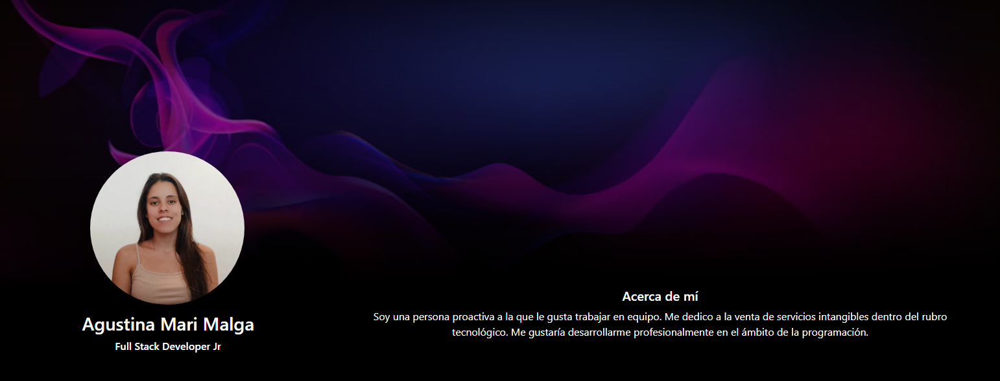

Aplicación web full stack que muestra mis datos personales, estudios cursados, experiencia laboral, habilidades y proyectos personales. De arquitectura distribuida, contiene un diseño de interfaz de usuario (front end) con información propia, base de datos que almacena la misma y las APIs necesarias para proveer a través de internet la información (back end).
